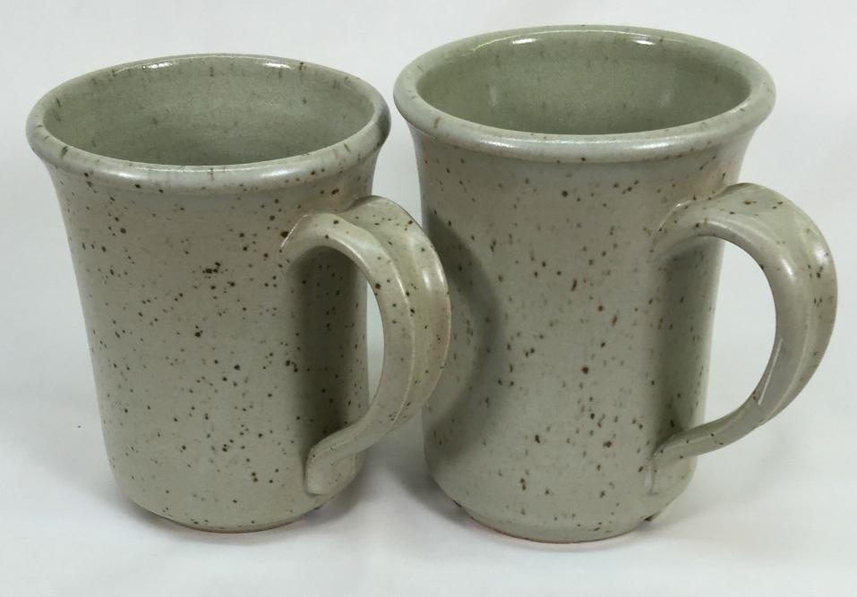
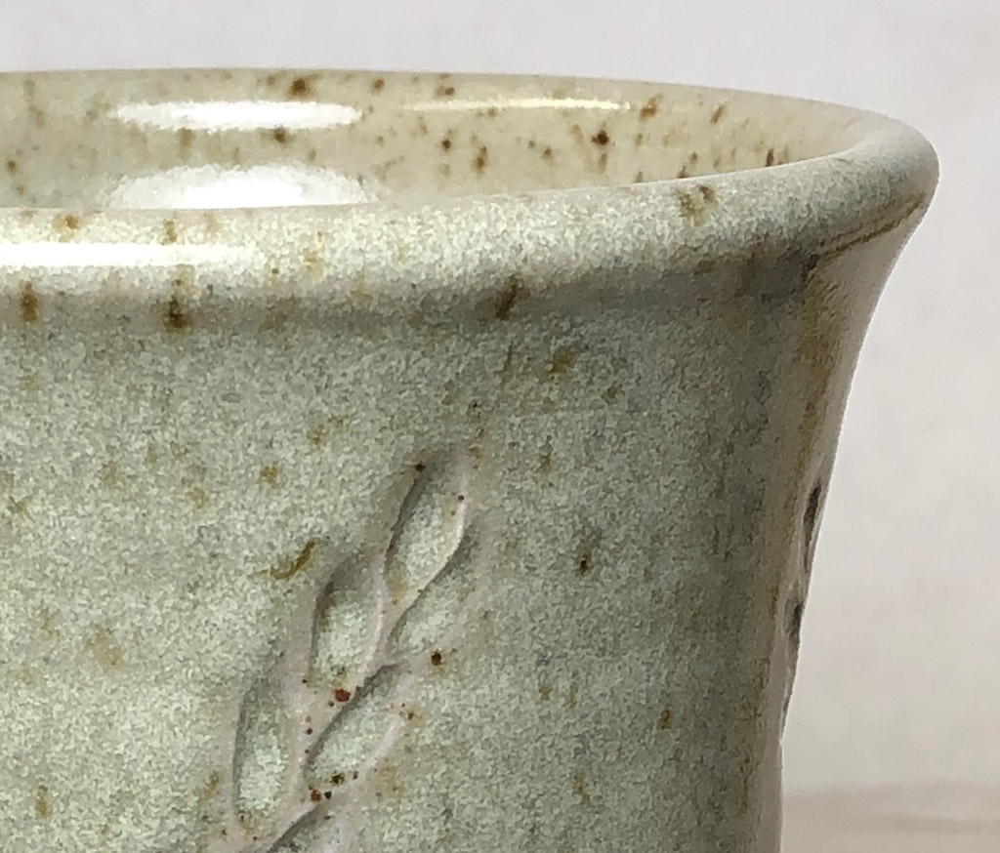

A Low Cost Tester of Glaze Melt Fluidity
A One-speed Lab or Studio Slurry Mixer
A Textbook Cone 6 Matte Glaze With Problems
Adjusting Glaze Expansion by Calculation to Solve Shivering
Alberta Slip, 20 Years of Substitution for Albany Slip
An Overview of Ceramic Stains
Are You in Control of Your Production Process?
Are Your Glazes Food Safe or are They Leachable?
Attack on Glass: Corrosion Attack Mechanisms
Ball Milling Glazes, Bodies, Engobes
Binders for Ceramic Bodies
Bringing Out the Big Guns in Craze Control: MgO (G1215U)
Can We Help You Fix a Specific Problem?
Ceramic Glazes Today
Ceramic Material Nomenclature
Ceramic Tile Clay Body Formulation
Changing Our View of Glazes
Chemistry vs. Matrix Blending to Create Glazes from Native Materials
Concentrate on One Good Glaze
Copper Red Glazes
Crazing and Bacteria: Is There a Hazard?
Crazing in Stoneware Glazes: Treating the Causes, Not the Symptoms
Creating a Non-Glaze Ceramic Slip or Engobe
Creating Your Own Budget Glaze
Crystal Glazes: Understanding the Process and Materials
Deflocculants: A Detailed Overview
Demonstrating Glaze Fit Issues to Students
Diagnosing a Casting Problem at a Sanitaryware Plant
Drying Ceramics Without Cracks
Duplicating Albany Slip
Duplicating AP Green Fireclay
Electric Hobby Kilns: What You Need to Know
Fighting the Glaze Dragon
Firing Clay Test Bars
Firing: What Happens to Ceramic Ware in a Firing Kiln
First You See It Then You Don't: Raku Glaze Stability
Fixing a glaze that does not stay in suspension
Formulating a body using clays native to your area
Formulating a Clear Glaze Compatible with Chrome-Tin Stains
Formulating a Porcelain
Formulating Ash and Native-Material Glazes
G1214M Cone 5-7 20x5 glossy transparent glaze
G1214W Cone 6 transparent glaze
G1214Z Cone 6 matte glaze
G1916M Cone 06-04 transparent glaze
Getting the Glaze Color You Want: Working With Stains
Glaze and Body Pigments and Stains in the Ceramic Tile Industry
Glaze Chemistry Basics - Formula, Analysis, Mole%, Unity
Glaze chemistry using a frit of approximate analysis
Glaze Recipes: Formulate and Make Your Own Instead
Glaze Types, Formulation and Application in the Tile Industry
Having Your Glaze Tested for Toxic Metal Release
High Gloss Glazes
Hire Us for a 3D Printing Project
How a Material Chemical Analysis is Done
How desktop INSIGHT Deals With Unity, LOI and Formula Weight
How to Find and Test Your Own Native Clays
I have always done it this way!
Inkjet Decoration of Ceramic Tiles
Is Your Fired Ware Safe?
Leaching Cone 6 Glaze Case Study
Limit Formulas and Target Formulas
Low Budget Testing of Ceramic Glazes
Make Your Own Ball Mill Stand
Making Glaze Testing Cones
Monoporosa or Single Fired Wall Tiles
Organic Matter in Clays: Detailed Overview
Outdoor Weather Resistant Ceramics
Painting Glazes Rather Than Dipping or Spraying
Particle Size Distribution of Ceramic Powders
Porcelain Tile, Vitrified Tile
Rationalizing Conflicting Opinions About Plasticity
Recylcing Scrap Clay
Reducing the Firing Temperature of a Glaze From Cone 10 to 6
Setting up a Clay Testing Program in Your Company or Studio
Simple Physical Testing of Clays
Single Fire Glazing
Soluble Salts in Minerals: Detailed Overview
Some Keys to Dealing With Firing Cracks
Stoneware Casting Body Recipes
Substituting Cornwall Stone
Super-Refined Terra Sigillata
The Chemistry, Physics and Manufacturing of Glaze Frits
The Effect of Glaze Fit on Fired Ware Strength
The Four Levels on Which to View Ceramic Glazes
The Majolica Earthenware Process
The Potter's Prayer
The Right Chemistry for a Cone 6 Magnesia Matte
The Trials of Being the Only Technical Person in the Club
The Whining Stops Here: A Realistic Look at Clay Bodies
Those Unlabelled Bags and Buckets
Tiles and Mosaics for Potters
Toxicity of Firebricks Used in Ovens
Trafficking in Glaze Recipes
Understanding Ceramic Materials
Understanding Ceramic Oxides
Understanding Glaze Slurry Properties
Understanding the Deflocculation Process in Slip Casting
Understanding the Terra Cotta Slip Casting Recipes In North America
Understanding Thermal Expansion in Ceramic Glazes
Unwanted Crystallization in a Cone 6 Glaze
Using Dextrin, Glycerine and CMC Gum together
Volcanic Ash
What Determines a Glaze's Firing Temperature?
What is a Mole, Checking Out the Mole
What is the Glaze Dragon?
Where do I start in understanding glazes?
Why Textbook Glazes Are So Difficult
Working with children
Ravenscrag Slip is Born
Description
The story of how Ravenscrag Slip was discovered and developed might help you to recognize the potential in clays that you have access to.
Article

Luke Lindoe, founder of Plainsman Clays - 1971
The village of Ravenscrag in southern Saskatchewan, Canada is on a lonely country road at the bottom of a large valley that drops away from the flat prairies. Not much happens there now but in the time of the dinosaur it was an exciting place! Their bones are easy to find and there is lots of archaeological activity.
To Luke Lindoe, a potter and geologist/prospector, this valley was a most interesting place. In the 1940s he worked in the local heavy stoneware and brick industries and had a dream to start a pottery clay manufacturing company using the clays found near Ravenscrag. That idea was the birth of Plainsman Clays in the 1960s. In 1972 I joined Luke and John Porter (a British trained master potter) at the new company and have been working there since. While Luke was trouncing around the countryside with pick and shovel John was working in the studio and managing and growing the business. I was interested in working with the materials Luke brought in, learning their properties. Both Luke and John taught me to see each material as a living entity to be studied and understood in a physical way, not just as a bunch of numbers on a data sheet.
When I drive along the valley bottom looking up at the hills on both with outcroppings of pure white clay I am still amazed there is a place like this. There is no rock, just hundreds of endless layers of clay. In ancient times the area was at the bottom of an inland sea. The weathering of the mountains far to the west created vast quantities of micro fine particulates that washed out into the sea and settled over long periods. Each layer is unique depending on the conditions of the geologic period. While they often have obvious boundaries, some layers blend into the next. To potters the most interesting of the layer-groups is called the ‘Whitemud Formation’. These secondary materials (transported and settled) are amazingly homogeneous and pure mechanically, many can be used as-is for pottery, by just slaking in water. Chemically the layers are diverse and are stained by iron to some degree. Mineralogically the whitemuds have a nice range of properties. There are refractory ball clays, buff-burning high and moderately plastic stonewares, a kaolinized sand and a bentonite. The one of interest is a very fine sand-clay-feldspar blend known internally as ‘3D’. Plainsman Clays has used it as a body ingredient since the early 1970s to help vitrify medium fire clay bodies and improve drying properties (it has low plasticity).

View from bottom of Frenchman River Valley, showing the layer of Whitemud clay along the bottom
The whitemuds are perhaps 200 feet below the surface. The Ravenscrag Slip parent clay layers can be found along the valley bottom, it having been carved out by the Frenchman river . It is just a matter of finding a hill whose top is a little above the whitemud layers. They can then be peeled off one-by-one and stock piled.
One day I plugged the percentage analysis of 3D clay, the bottom layer we mine, into the Digitalfire INSIGHT, to do a little glaze chemistry. Notice the unity formula (I have shown the ranges for a typical cone 10 glaze on the right).
BaO Barium 0.05* 0-0.3 CaO Calcium 0.07* 0.35-0.7 MgO Magnesium 0.26* 0-0.35 K2O Pottasium 0.58* 0.2-0.45 KNaO Na2O Sodium 0.03* TiO2 Titanium 0.16 Al2O3 Alumina 3.34 0.3-0.55 SiO2 Silica 24.89 3.0-5.0 Fe3O3 Iron 0.14
At first 3D does not look much like the chemistry of a typical high-fire glaze because the alumina and silica are 10 times recommended and there is little CaO (the basic flux of such glazes). Thus it struck me that adding calcium carbonate to source only CaO could drastically reduce the ratios of alumina and silica to fluxes. Amazingly, as you can see below, it takes only 10% whiting to turn the original chemistry (left) into a balanced glaze (right)!
BaO Barium 0.05* 0.01 CaO Calcium 0.07* 0.88 MgO Magnesium 0.26* 0.03 K2O Pottasium 0.58* 0.08 Na2O Sodium 0.03* tr TiO2 Titanium 0.16 0.02 Al2O3 Alumina 3.34 0.45 SiO2 Silica 24.89 3.32 Fe3O3 Iron 0.14 0.02

Plainsman H435 with Ravenscrag Talc glaze matte inside, Ravenscrag Dolomite matte outside
Fired at cone 10R. The GR10-C Raven-Talc matte is just 90% Ravenscrag Slip and 10% talc. This produces a stunning silky, variegated surface (which could be a base for many colorants). The GR10-J Raven-Dolomite matte was patterned after our G2571A glaze, but using as much Ravenscrag Slip in the recipe as possible while maintaining the same chemistry (its surface is less variegated and more matte).
The non-chemistry approach would have been to blend feldspar with this clay to get it to melt more. But we can see from the chemistry that this is exactly the wrong thing to do. However the chemistry was not a perfect predictor either. 10% whiting is not really enough to get the needed melting and the CaO is actually too high. So I did some juggling and employed a couple of other flux-sourcing materials and ended up with a recipe that does melt well at cone 10. Conditioning the pure 3D with other minerals is better than just selling the native 3D, the recipe buffers mining variations and gives Plainsman the power to adjust the chemistry if needed. It also produces the right balance of clay, alumina and silica to be a complete cone 10 glaze that melts well to a clear eggshell non-crazing semi-gloss.
Adding about 10-20% Ferro 3134 to Ravenscrag Slip produces a good melt at cone 6. Ravenscrag is thus an ideal starting point for material-blending-style glaze development and experimentation with colorants (although it has a little iron that can impede bright colors), opacifiers (eg. 10% Zircopax), variegators (eg. 5% rutile), and glossing/matting/reacting agents. You can make tenmoku, celadon, brown crystal, or kaki at cone 10R with the appropriate amount of iron (2-12%).
This material has a unique physical presence also. I was originally attracted most by its very good slurry properties (it is surprising how many potters tolerate difficult-to-use glazes). Yet even at high temperatures where it is easy to formulate glazes with good slurry properties it has often not been done. Why? Many formulators start with the raw material that melts the best (feldspar) and then add things until the melt is stabilized. The problem is that clay is not a good addition. Why? Feldspar has plenty of alumina and thus little is needed from other sources. Unfortunately the major other source is clay, it is needed to create a good suspension. The result has been a bunch of high-feldspar low-clay glazes having rotten slurry properties that craze because of the high sodium content! This does not happen with the Ravenscrag Slip "clay first" formulation approach.
Ravenscrag Slip is an excellent solution to this. It imparts beautiful working properties to the glaze slurry: suspending and improving evenness of application, drying speed, reducing shrinkage. That being said, if glazes have a high percentage of Ravenscrag Slip (e.g. 50% or more) I recommend roasting part of it (e.g. use a 50:50 roast:raw mix to supply the Ravenscrag requirement in the recipe).
Related Information
Luke Lindoe in 1971
This picture has its own page with more detail, click here to see it.
He was the founder of Plainsman Clays. My dad had just built the Plainsman Clays factory for him and I began working there in 1972 (this picture was taken at his house, which my father also built). He was a well-known artist potter and sculptor at the time, having come out of the pottery production industry in the area. He got me started along the fascinating road of understanding the physics of clays. He was a true "plains man", interested in the geology of the plains (notice the skulls, these inspired the Plainsman logo). He got me started doing physical testing of raw clays (that he was finding everywhere). I was blown away by the fact that I could assess a completely new material and judge its suitability for many types of ceramic products and processes by doing the simple physical tests he showed me. It got started writing software to log the data for that back in the 1980s, that eventually led to digitalfire.com and Insight-live.com.
"Whitemud" clays in dinosaur country of southern Saskatchewan.
These are Cretaceous. Jurassic? 1km straight down.
This picture has its own page with more detail, click here to see it.
This is a "badlands" slope in the Frenchman river valley. The valley exposes the "Whitemud Formation" in many places (clearly visible here part way down on the left). Two surface mines of Plainsman Clays are nearby, in a place where lower-lying rolling hills leave much less over-burden to remove. These materials were laid down as marine sediments during the Cretaceous period. The skeleton of the world's largest T.Rex, dubbed "Scotty", was found 50km east of here (in the layers just above the Whitemuds). Where are the layers of Scotty's ancestors from the Jurassic period? Straight down 1 kilometer! And another kilometer to bedrock!
IXL Industries clay quarry near Ravenscrag, Saskatchewan in 1984.

This picture has its own page with more detail, click here to see it.
Layers of the Whitemud Formation are being mined. The layer being extracted is a silty stoneware they referred to as the "D member" (equivalent to Plainsman PR3D which is mined several miles to the east for use in pottery). It was great for bricks because it dried quickly and had minimal drying shrinkage. Below the D they continued to mine a much whiter kaolinized sand of equal or more thickness. Above the D is a ball clay (equivalent to Plainsman A2). Above that is a light-burning stoneware (the combined layers that Plainsman extracts separately as A3 and 3B). A foot-thick layer of much harder volcanic ash is visible in the green overburden at the top. From these stoneware clays they extruded brick of exceptional quality, firing it as high as cone 10. Twenty years later, the company reclaimed this land - today you would be unable to find where it was located.
RavenTalc silky matte on the outside of a cone 10R buff stoneware mug

This picture has its own page with more detail, click here to see it.
GR10-C Ravenscrag cone 10R silky matte glaze closeup (on Plainsman H550 stoneware). The recipe is 90% Ravenscrag Slip (roast:raw combo) and 10% talc. The inside of this piece just has pure Ravenscrag (raw:roast).
Cone 10 Reduction stoneware with Ravenscrag Glazes
Inside is pure Ravenscrag Slip. Outside is GR10-J Ravenscrag dolomite matte. By Tony Hansen.
Links
| Materials |
Ravenscrag Slip
A light-colored silty clay that melts to a clear glaze at cone 10R, with a frit addition it creates a good base for a wide range of cone 6 glazes. |
| Articles |
Creating a Non-Glaze Ceramic Slip or Engobe
It can be difficult to find an engobe that is drying and firing compatible with your body. It is better to understand, formulate and tune your own slip to your own body, glaze and process. |
| Articles |
Duplicating Albany Slip
How Alberta Slip was created by analysing and duplicating the physical and chemical properties of Albany Slip |
| URLs |
https://plainsmanclays.ca/data/index.php?product=12911
Ravenscrag Data Sheet at Plainsman Clays |
| URLs |
http://ravenscrag.com
Ravenscrag web site |
 PayPal | No tracking, No ads, No paywall, No transient content! Just organized, concise information constantly updated and improved. Was this helpful? Consider supporting me. |
| By Tony Hansen Follow me on        |  |
Got a Question?
Buy me a coffee and we can talk 

https://digitalfire.com, All Rights Reserved
Privacy Policy